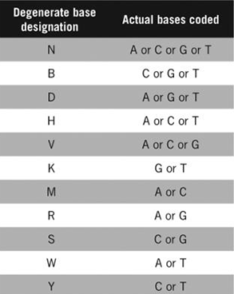

Following up from the big goal I set in mind, “I need to find the correct set of degenerate codons.” I asked myself “If I were to find the set of all degenerate codons that code for a set of amino acids, how would I know which one to pick.” By using Tomer’s algorithm, the percent error from each of the sets of degenerate codons can be used to find the set with the lowest error. That set with the lowest error would be the most suitable set of degenerate codons that code for the specific ratio of amino acids. While the issue with time is not affected by the number of degenerate codons, the process of finding all sets of degenerate codons can result in too much time loss.
For now, I’m looking at defining each amino acid by degenerative codons that defines all of its different combinations ((Leu/L) Leucine, (Ser/S) Serine, (Arg/R) Arginine require two*) and finding the intersection between them. If there doesn’t exist at least two bases shared, I would take the union of them.
For example, for the three amino acids (Phe/F) Phenylalanine, (Leu/L) Leucine, and (Thr/T) Threonine, the degenerative codon definitions are as follows: (Please refer to the degenerative base table on the right)
(Phe/F) Phenylalanine: TTT TTC -> TTY
(Leu/L) Leucine: TTA TTG CTT CTC CTA CTG -> TTR CTN
(Thr/T) Threonine: ACT ACC ACA ACG -> ACN
The only intersection that exists with at least two similar bases is between F and L producing TTN (the last base acting as a “wildcard” that defines whether it is F or L). T has no valid pairing with either F or L so I would take the union of T and the FL combination. This results in
(TTY ∩ TTR) ∪ ACN -> TTN ∪ ACN
This can be broken down into other sets as well. For example:
TTN ∪ ACN -> any combination of (TTN/TTW/TTS/TTM/TTK) ∪ (ACN/ACB/ACD/ACH/ACV/ACK/ACM/ACR/ACS/ACW/ACY)
After my summer break I’m going back into researching the heuristics of an algorithm that finds the exact set of degenerate codons that can be used to most closely match the output ratio of amino acids.
I re-examined the algorithm that was left for me that was developed by Tomer Aberbach that gives the ratio of a specific set of degenerate codons that output what closely matches the wanted ratios of amino acids. I need to figure out a way to find the specific set of degenerate codons that will give ratios that most closely match the ratios of amino acids with relatively low error.
This algorithm solves the later step of the whole problem. It gives me the ratios for the degenerate codons that will result in them creating amino acids that match the requested ratio of amino acids. I need to find the correct set of degenerate codons.
Here is a simple rundown of what Tomer’s Algorithm does:
Tomer Aberbach’s Algorithm: His program takes an amino acid set, the ratio for each acid, and the degenerate codon set that codes for the acid set and outputs the ratio for the degenerate codons. To solve the ratio, it uses linear algebra to solve the least squares of the equation Ax = B with ATAX = ATB, where A is a matrix where each row is an amino acid the degenerate codon can create. Each column would be a degenerate codon. The matrix would contain ratios of the individual amino acids compared to the others also taking account of the coupling ratios for each base. Vector b would be the target ratio for each amino acid. Solving for x would give the ratio for the degenerate codons that most closely matches the wanted ratio.
Create an algorithm that finds the set of degenerate codons that code for a specific ratio of amino acids.
